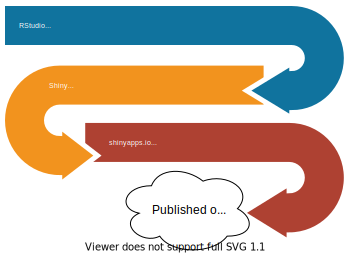
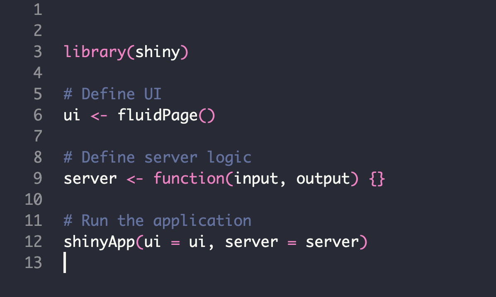
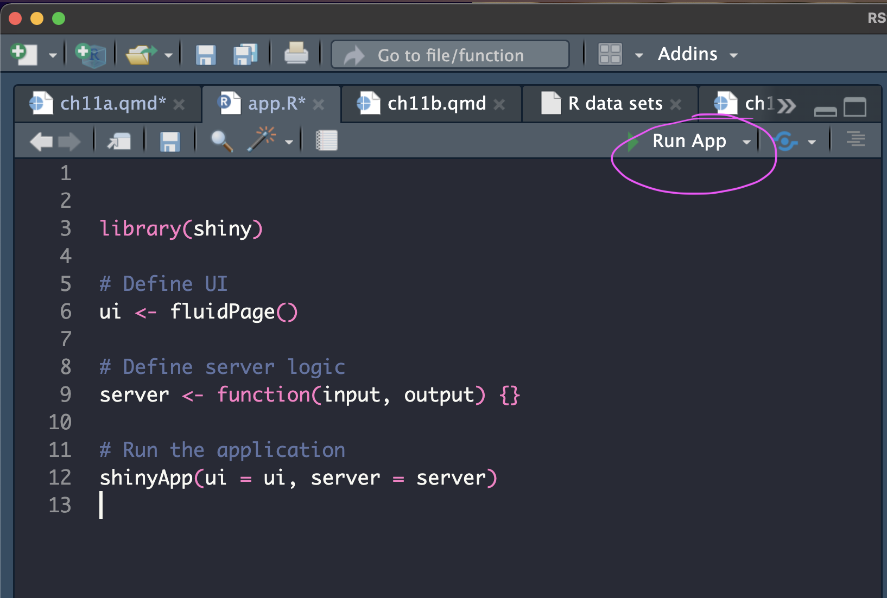
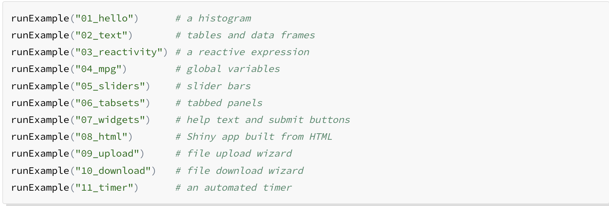
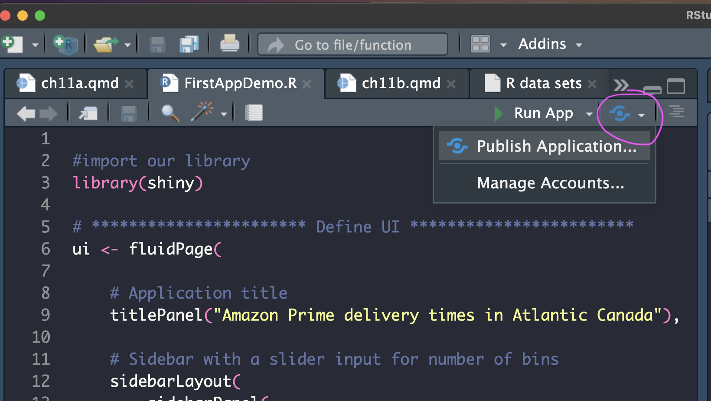
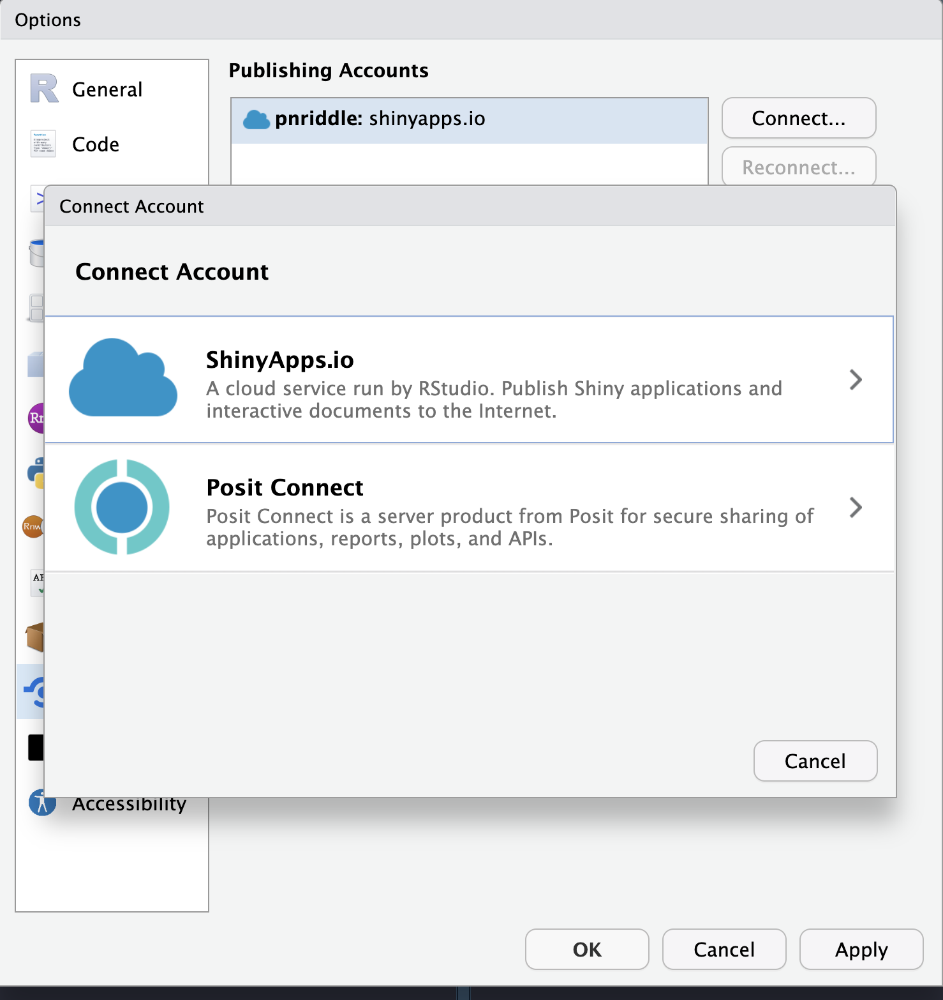
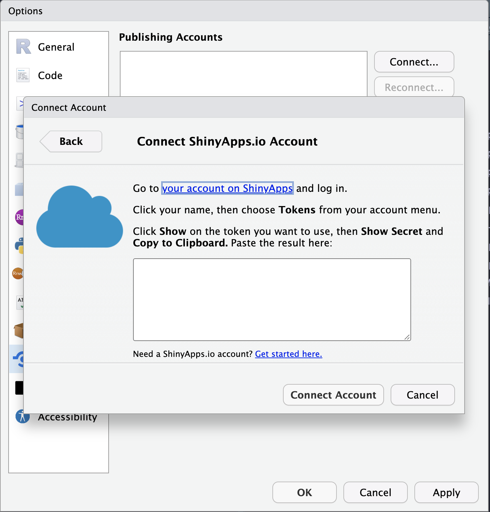
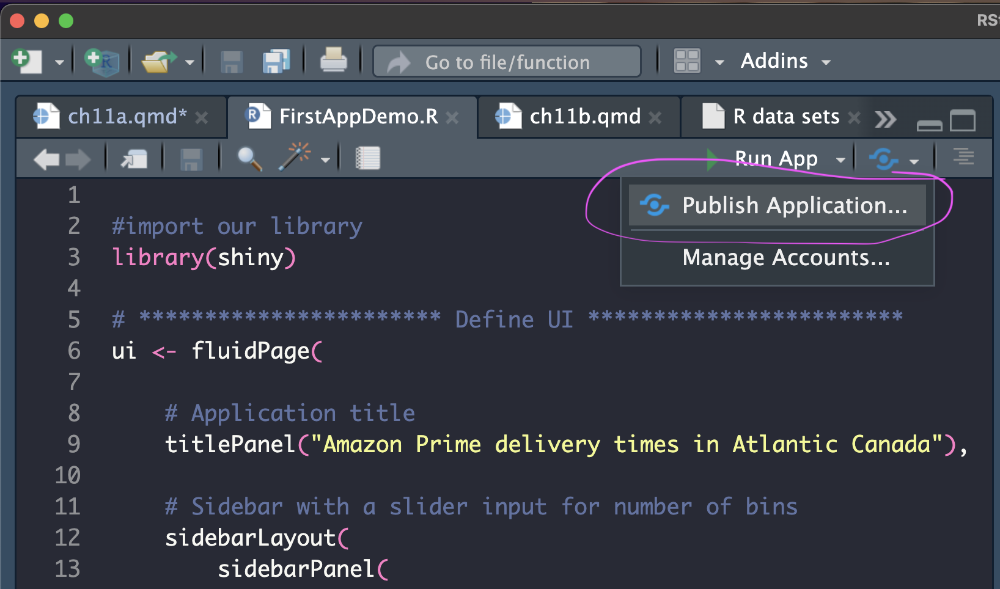
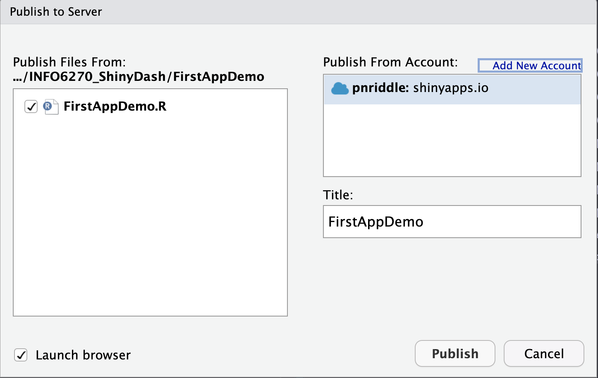

# this is written in R
print("Hello lovely people!")[1] "Hello lovely people!"What’s a ShinyApp?
This chapter introduces you to ShinyApps using R code to create and publish data, research materials, or informative tutorials. Chapter 11 is divided into two parts, 11a and 11b. In chapter 11a, you will learn:
what a ShinyApp is and how to find resources,
how to use RStudio and shinyapps.io to publish your application and,
how to recognize the main components of a Shiny application.
Chapter 11b will take a deeper look at many of the commonly used functions for input and output so that you can begin to customize and build your own applications.
Shiny is an R package that builds interactive web applications using R and RStudio to compile HTML files. The HTML files can be used locally, (just opened up using your browser from a local directory), or placed on a server to make public for anyone to use. Its not just for data, either! They are used as an education tool, a map for finding resources, business intelligence (BI) dashboards, tracking activities, calculators, file type conversion, and of course, for displaying the results of data analysis through interactive visualizations.
You are not restricted to just the web browser. You can configure your shiny app to export other document types, like PDFs, Word, or Excel.
The most important aspects of Shiny are that it is interactive and it is responsive. Interactivity provides an opportunity for your viewers to engage with your materials, rather than just read it. Responsive applications resize automatically to adjust to the device being used. This means you design once, and it can be viewed on a laptop, desktop, tablet, or phone.
In Shiny, we code in R. In the following sections, code will be shown in cells:
# this is written in R
print("Hello lovely people!")[1] "Hello lovely people!"The Shiny Gallery is really helpful when learning as the examples provided include their code, so you can see how they created the interfaces. Below, is an example of where we’re heading with this chapter and where we’ll be going in the next chapter which will lead you through the steps to creating a dashboard.

A dashboard is one that uses data that has been placed on the server, (or you have uploaded) or streams real-time and shows a variety of graphs, charts, and tables. In our examples case, we’ll use standard datasets from R as well as some from the fivethirtyeight GitHub repository. You can see the all the R data sets by typing the following in the console:
data()The term ‘dashboard’ does apply to specific libraries made for Shiny that use a template HTML file. We are calling any website for the purpose of showing, exploring, or manipulating data with multiple visualization methods - a dashboard. So, we use it rather casually, rather than specifying specific libraries.

This is the IDE, the integrated development environment, for R, (among many other programming languages). We’ll be using RStudio to create our shiny apps, test the code, preview results, and manage files.
Shiny apps are built on Bootstrap which is an open-source, template HTML file with CSS and Javascript that makes it adapt to different browsers and devices. The Shiny app code does all the work to place the elements you design into an HTMLL files and automatically manages all file dependencies. We’ll briefly discuss files when getting started with your first app.
When running a shiny application from RStudio, you can publish directly to a server. Thankfully, the R community has a server location where you can host up to 5 apps for free at shinyapps.io. Of course, you can pay for more space, but for now, this works for us! Later on, we’ll walk you through publishing to the server directly from RStudio. Its surprisingly easy!
This link to the tutorials at shiny.rstudio.com can also guide you through steps to creating your own apps, including more detailed information on how to change elements to meet your needs.
Install the package down below in the console. You only need to do this once. If you uninstall and re-install your RStudio, you may need to reinstall packages.
install.packages("shiny")from Files>New File > Shiny Web app OR select new file from the pull down menu in the top toolbar.

This brings up a dialog box. Enter your project name. This will become the name of the folder that is created in the location you select.

Once you select Create you will see the template shiny app. This has three sections which we will cover next.

There are three parts of a shiny app: the ui, the server, and the shinyApp() function that calls the ui and server.
The ui (the user interface object) specifies the layout: where items are placed on the webpage.
The server function is the instructions for how shiny builds your app.
The shinyApp() function creates the actual app from the ui and server components
Past versions of shiny used multi-page layouts with the ui and server components saved as separate files, such as ui.R and server.R. While this is still supported, the rest of this chapter will assume that we’re using the single-page version in which the ui and server are together in one app.R file.
The UI and the server both have inputs and outputs that will be assigned and called. We’ll go over those in the Inputs & Widgets section later on.
Under More, select Set as working directory. You can also do this in the console with:
setwd("~/your_folder_name")Save Page As... from your browser to this directory. Then rename the file from FirstAppDemo.txt to FirstAppDemo.Rui, the server, and the shinyApp() function.
We’ll be going through each of these items in more detail, but for now, you can see the basic structure.
To run the app, use the Run icon shown below. This will run in the RStudio viewer by default, but you can also run in your browser with the Run external option checked.

That’s it to run a basic Shiny app!!! The shiny library comes with many examples you can explore as well as even more sophisticated examples on the Gallery page.

That’s it! you’ve created a new app. Its simple right now, but we’ll explore more options later for designing something that works for your needs. Let’s discuss how we publish next so that you get a sense of the entire workflow.
Now we can start publishing online for the world to experience your brilliant research! A free account at shinyapps.io provides space for 5 applications and 25 active hours of server time. (what are active hours?)
Create a shinyapps.io account. You will need your login info to set up your RStudio to publish directly to shinyapps.io. Click here to set up a shinyapps.io account. I recommend connecting via your GitHub account, if you have one. Otherwise, just start a new account.
Back in RStudio, we need to connect to your shinyapp.io account. To the right of the Run icon, select the pull down menu.

Select Connect… and then choose shinyapps.io

Follow the instructions to find the token and paste into the space provided.

So exciting! Now, you are ready to publish to shinyapps.io!

Check all the files you want uploaded to the shinyapps.io server. In our case with this demo, it should only be one file, FirstDemoApp.R.

That’s it! You’ve done it!! Now sit back and watch the cash and attention role in! If you want to find your app on the shinyapps.io dashboard, you can login here or below.
At this point, you know enough to open existing apps on Shiny Gallery, copy and modify their code, and publish them on shinyapps.io. In chapter 11b, we’ll be going over many of the inputs and outputs with an exercise that will help you design apps based on your needs.
In this chapter, we’ve covered what shiny is and how to get started. You can open existing Shiny apps, and start exploring their code, or adapting them to your own needs.
There is an extensive amount of tutorials and documentation on making apps with Shiny and you can find some of those in the References section below. Chapters in this course are a living document, so if you have suggestions for materials you found helpful, please send them along to us.
The next section of chapter 11 moves into a more detailed view of the inputs and outputs, layout options, and discusses reactivity in more depth.
I took inspiration and guidance from many sources which I’ve tried to include here:
The Bookdown library for R, at bookdown.org, provides a tutorial on how to build Shiny apps.
Mastering Shiny by Hadley Wickham https://mastering-shiny.org/index.html
W3 color resources: https://www.w3schools.com/colors/default.asp